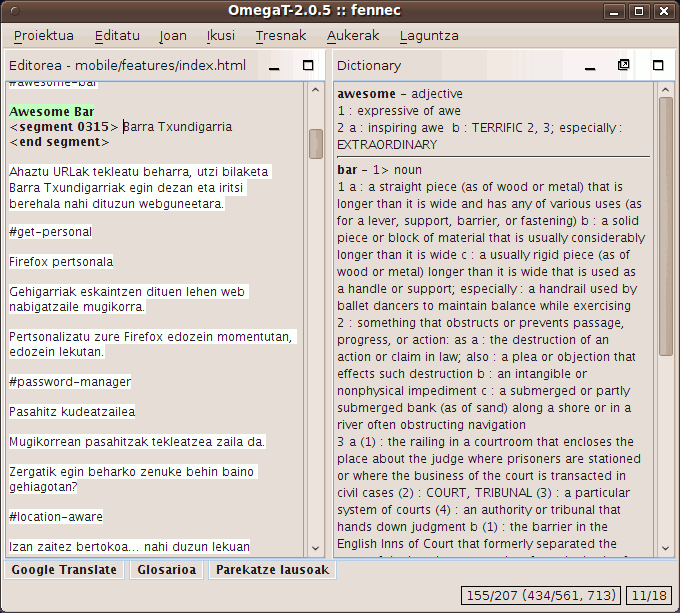

Hiztegiak
Nola instalatu eta deskargatu hiztegiak
OmegaT-ko hiztegiak StartDict plataforman oinarrituta daude. Beharrezkoak diren fitxategiak instalatzeko, jarraitu hurrengo argibideak:
- Bilatu nahi dituzun hizkuntzen konbinazioa - esaterako, StartDict plataforman edo FreeDict-en
- Deskargatu fitxategia -tarball fitxategia izan behar du (tar.bz edo tar.bz2 luzapena).
- Erabili untar (edo horren parekoa, adibidez winrar Windows-en) bere edukia proiektuaren "dictionary" karpetara erauzteko. Hiru fitxategi behar dira, dict.dz, idx eta ifo. luzapena dutenak.
Kontuan izan "sorburu-helburu" motako hiztegiez gain, hiztegien panela erabiliz, beste mota bateko informazioa ere jaso daitekeela, esaterako:
- Webster's Revised Unabridged
Dictionary (1913)
- Longman Dictionary of
Contemporary English
- Merriam Webster 10th
dictionary
- The Britannica Concise
Encyclopedia
- etab.
Horietako hiztegi batzuk "erabilera librekoak" dira, eta beste batzuk, esaterako goikoa, GPL lizentziaren pean erabil daitezke. Hurrengo adibideak Merriam Webster 10th dictionary "lanean" erakusten du:

Arazoak hiztegiekin
Hiztegien panela hutsik badago, egiaztatu hurrengoak:
- Hiztegi-fitxategiak zure proiektuan ezarritako karpetan (edo horren azpikarpeta batean) daude? Begiratu proiektuaren propietateen leihoan (Proiektua → Propietateak menua edo
Ctrl+E).
- dict.dz, idx eta ifo. luzapena duten hiru fitxategi al daude karpetan, hirurak izen berekoak? Espero den izena duen fitxategi bakarra badago, begiratu bere luzapena. Luzapena tar.bz bada, orduan destrinkotzea ahaztu zaitu.